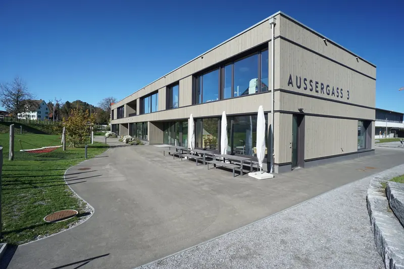
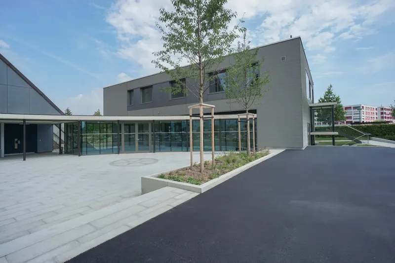
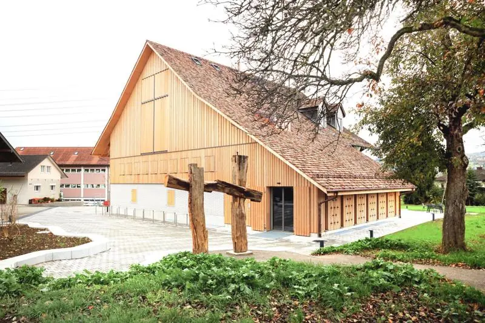
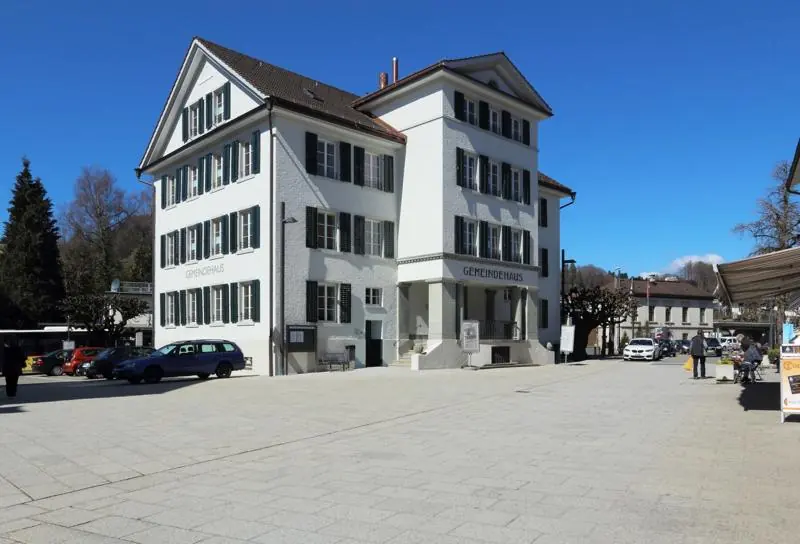
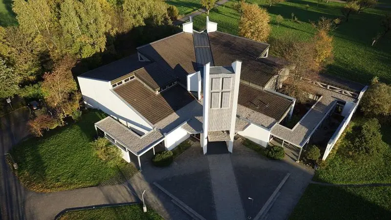
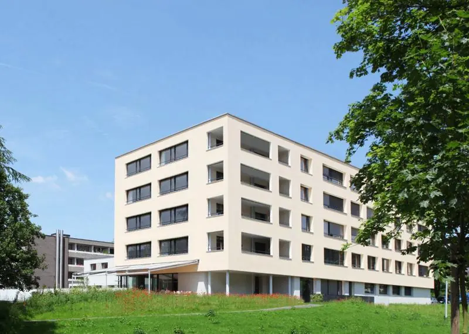

Schulanlage Berg Gossau
Umbau und Sanierung einer bestehenden Sekundarschulanlage
- Fertigstellung
- 2026
- Verfahren
- Direktauftrag
- Bauherrschaft
- Gemeinde Gossau, v. d. Liegenschaftsabteilung
- Kosten
- ca. 4'000'000 Fr. (in mehreren Etappen)
apb architekten ag aus Uster hat seit 2010 11 öffentliche Bauten realisiert – in Fällanden, Gossau, Grüningen, Herrliberg, Maur, Schwerzenbach, Uster, Volketswil, Wald und Wädenswil. 8 davon nach einem gewonnenen Wettbewerb oder einer Planerwahl (1. Rang).
Bauherrschaften: Gemeinde Gossau; Gemeinde Grüningen; Gemeinde Herrliberg; Gemeinde Maur; Gemeinde Wald; Kat. Pfarrei Bruder Klaus; Röm.-Kath. Kirchgemeinde Dübendorf; SBB AG; Stadt Uster; Stiftung Kinderhospiz Schweiz.
Umbau und Sanierung einer bestehenden Sekundarschulanlage

Neubau eines Kinderhospizes als Pflegeeinrichtung

Neubau Schulgebäude in Beton-Holz-Hybrid-Bauweise

Aufstockung des bestehenden Pfarreizentrums

Teilabbruch Bauernhaus von 1803 und Wiederaufbau als Kirchgemeindehaus

Umbau und Totalsanierung im Inneren des historischen Gemeindehauses

Erweiterung, Umbau und Sanierung des Gemeindehauses

Umbau Turnhalle, Schulküche, Lüftungszentrale auf MINERGIE-Niveau

Umbau und Sanierung eines denkmalgeschützten Bahnhofgebäudes

Akustische Verkleidung und Lichtgestaltung des Glockenturms

Anbau und Umbau Pflegezentrum in MINERGIE-Bauweise, Wettbewerb 1. Rang
Fragen zu einem Projekt oder eine eigene Aufgabe? Kontakt aufnehmen